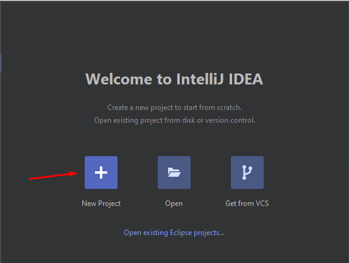
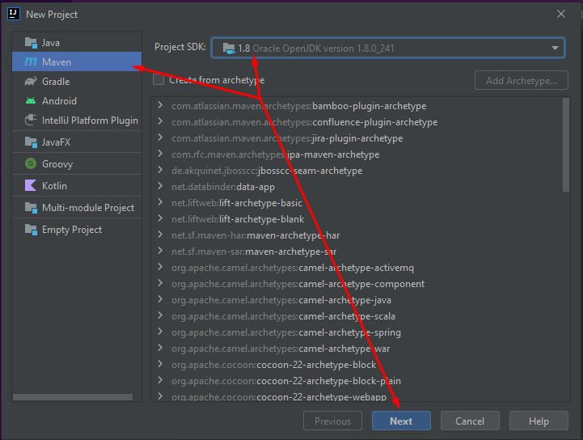
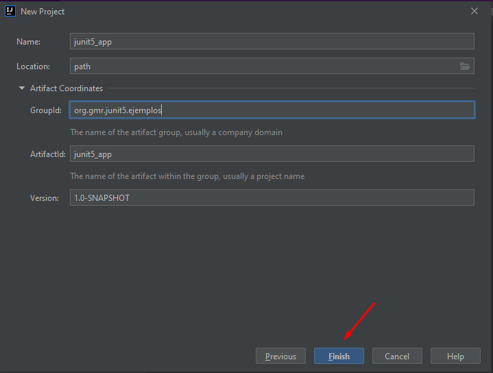
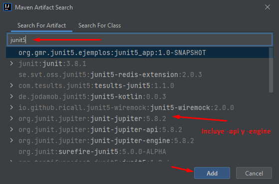
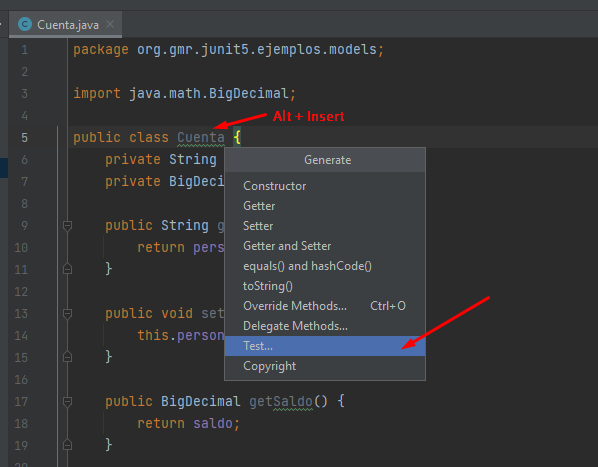

https://www.jetbrains.com/ -> Developer Tools -> IntelliJ IDEA -> Download -> Community
Todas las opciones por defecto
4. Introducción pruebas unitarias
Las pruebas unitarias son un proceso de examen para verificar que una pieza de código cumple con ciertas reglas de negocio y afirmar un resultado esperado
JUnit es una librería java para escribir y ejecutar repetibles pruebas unitarias
5. Introducción JUnit 5
JUnit 4 tenía aproximadamente 10 años cuando salió la versión 5
Incluye programación funcional y lambda
JUnit 4 era monolítico, pero la versión 5 se estructura:
JUnit Platform: es el core. Está enfocado al contexto de ejecución del test
JUnit Jupiter: API con la que escribimos los tests
JUnit Vintage: Permite integrar la versión 4 con la 5
6. Creando y configurando el proyecto con JUnit 5




7. Escribiendo y ejecutando primeras pruebas unitarias con Assertions
Hay varias formas de crear un test. Dos de ellas son:
Alt+Insert sobre el nombre de la clase
